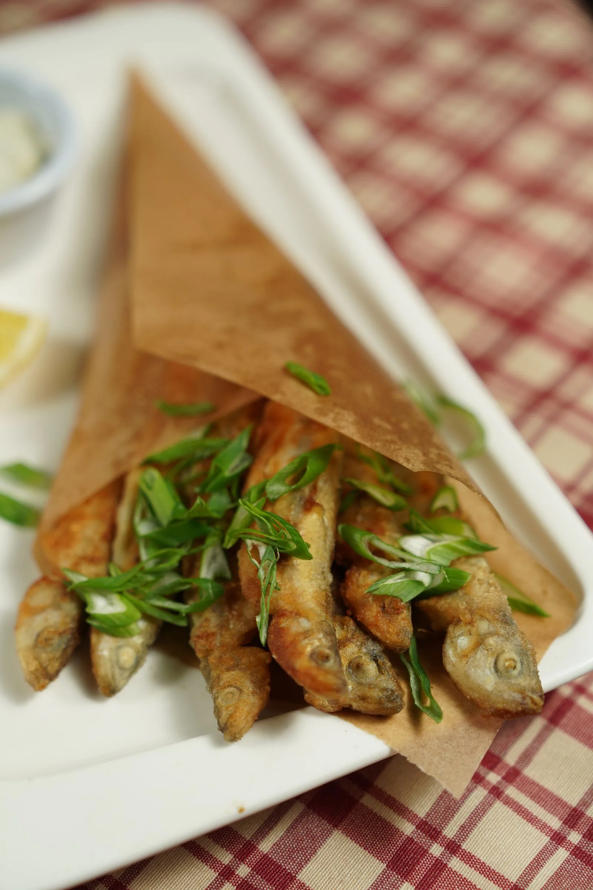
House fame
Kasuri Fried Fish
The plate reviewers travel for — spiced, fried crisp, and served with salad and chutney.
Lalyani Adda · Old City Kasur
Kasuri fried fish, karahi and barbecue — fried crisp, grilled over coals, and served with fresh naan.
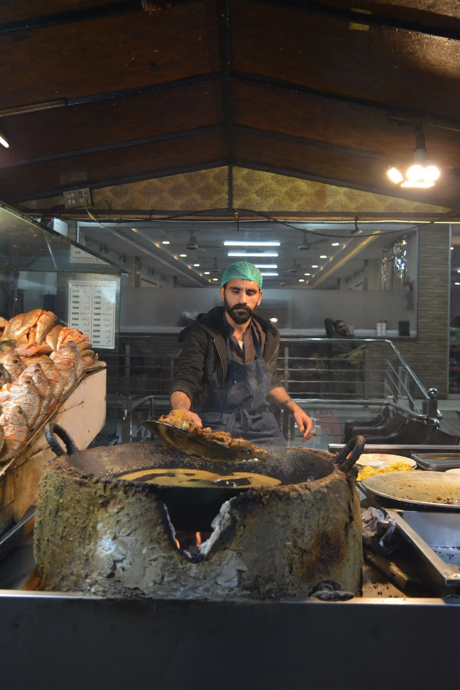
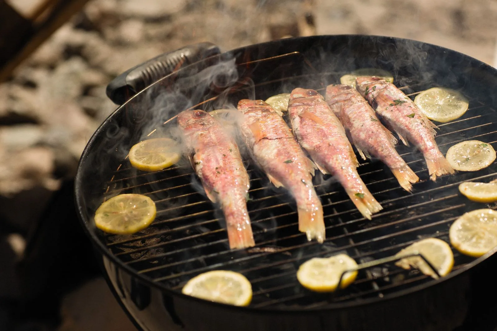
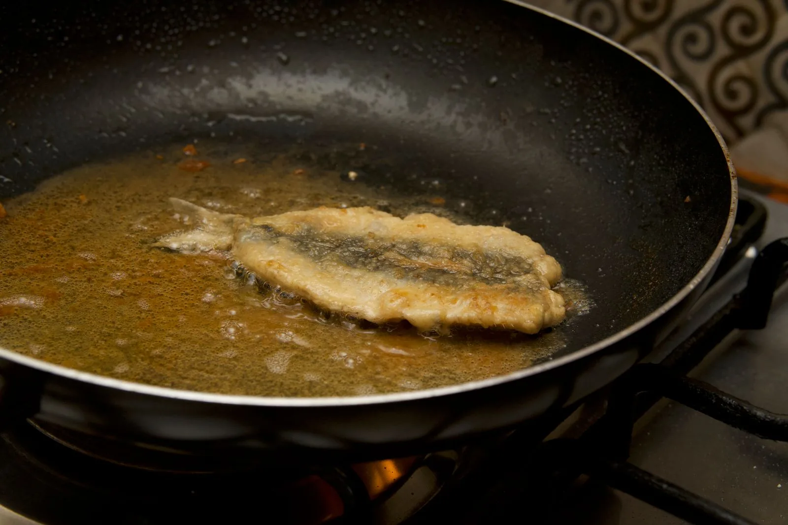
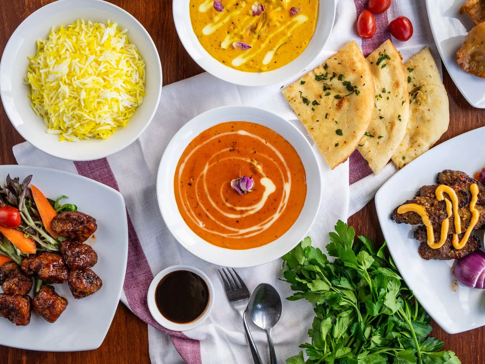
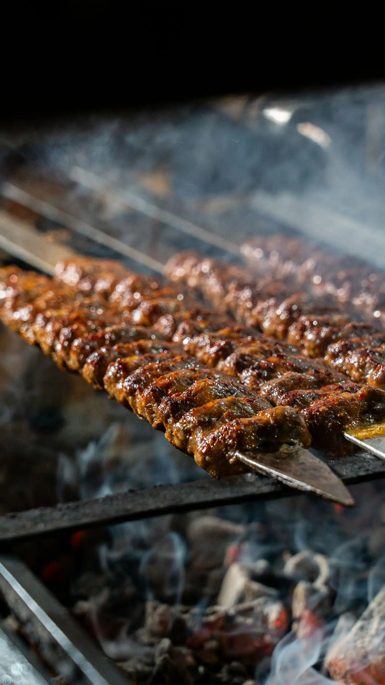
4.0
Google rating · 2,168 reviews
1948
Serving Kasur since
4.0
Google rating
2,168
Google reviews
12 midnight
Open till, every day
From the fryer
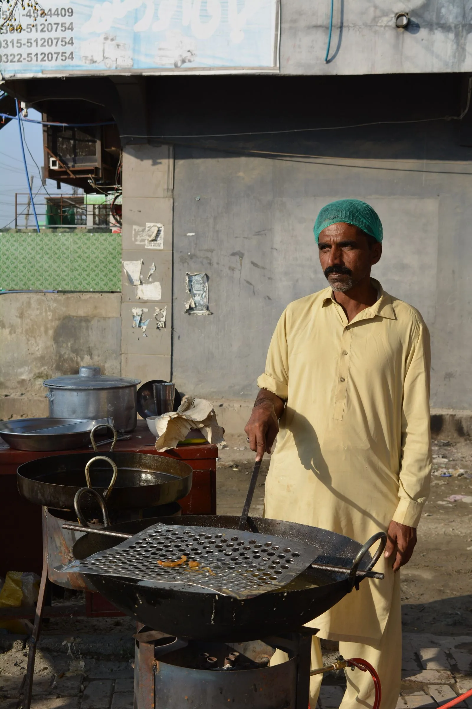
01
Fish hits the hot oil at the fryer — crisp outside, tender inside.
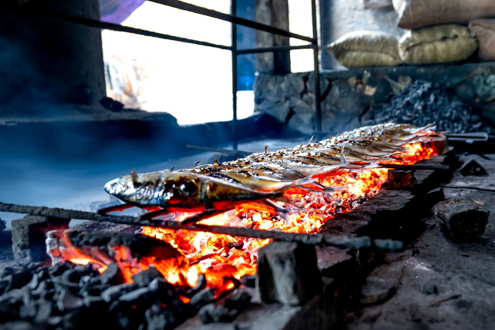
02
Whole fish grills slowly over glowing charcoal.
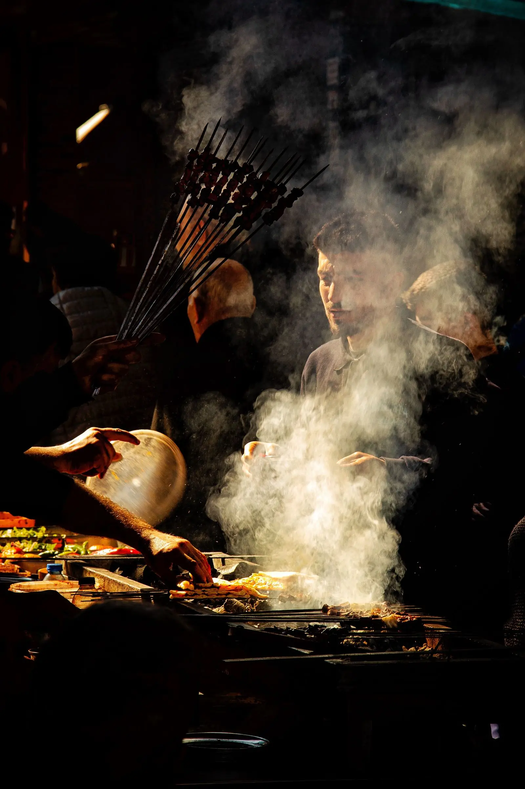
03
The grill stays lit late — kebabs and fish keep coming, hot, till midnight.
Since 1948
Driver Hotel has been serving Kasur from Lalyani Adda, in the Old City, since 1948, when Muhammad Din opened its doors. Decades on, the draw has stayed the same: Kasuri fried fish, karahi and barbecue, cooked in the open kitchen and eaten in the clean dining hall.
It is the kind of place people plan a drive around — fish first, then the karahi, then one more round of naan.
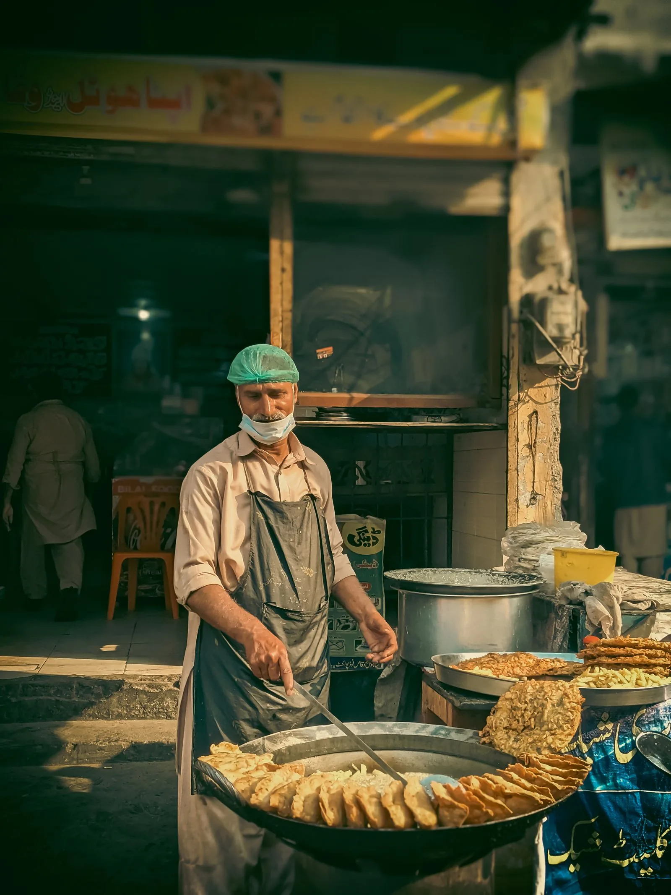
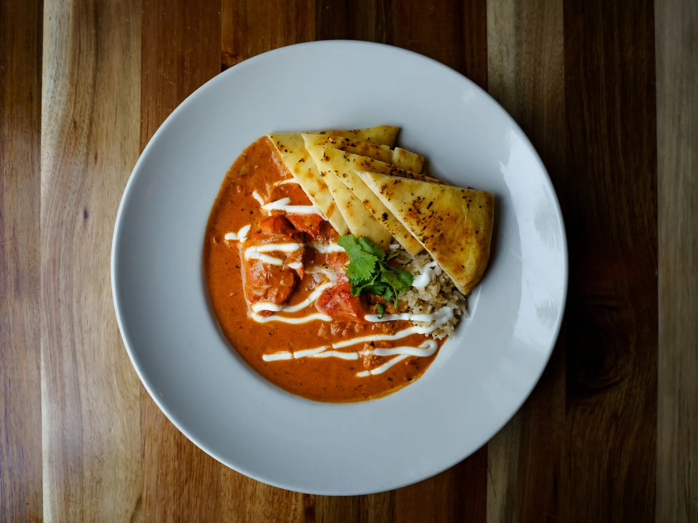
The tandoor
Every karahi and fish plate arrives with fresh tandoor naan — and the naan tikki is a house favourite in its own right. Order the bread hot, tear it, and scoop.
Family sitting & function hall
The dining area is clean, with separate family sitting, and there is a function hall for birthdays and engagements. Come for a quiet family dinner, or bring the whole gathering.
To book the function hall, call ahead on 0320 2727273 and arrange it by phone.
Book the hall — call now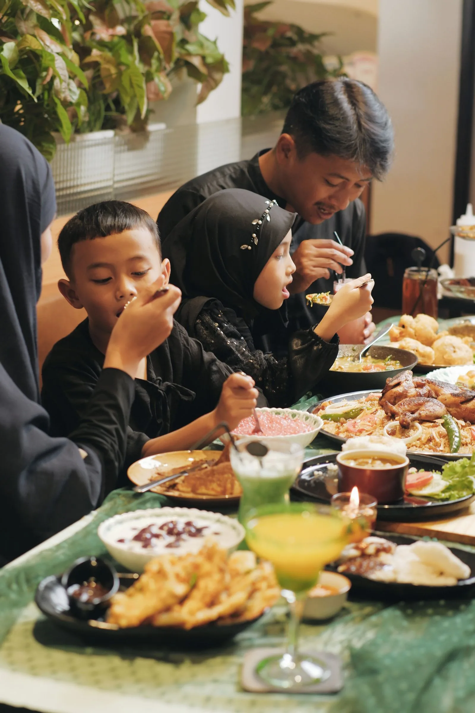
Why Kasur chooses Driver Hotel
01
Reviewers travel for the Kasuri fried and grilled fish — it is the plate the restaurant is known for.
02
Chicken and mutton karahi, and the barbecue, are praised again and again for taste.
03
A clean dining area with separate family sitting — and an open kitchen you can watch while you wait.
04
Birthdays and engagements gather in the function hall, with the same kitchen behind them.
05
Serving Kasur from Lalyani Adda since 1948 — a table the city has trusted for decades.
Gallery
Tap any photo to see it full size.
Good to know
Service can be slow when the hall is full — the fish is worth the wait, but give yourself time.
Parking around Lalyani Adda is roadside and tight — come early at peak hours if you are driving.
The opening hour is not published anywhere — call 0320 2727273 before you set out to confirm. The kitchen serves till 12 midnight.
Some long-time reviewers say the cooking has slipped from its peak — the fish still draws the crowds, and the karahi still gets praised.
Questions, answered
Kasuri fried fish — it is the house speciality reviewers travel for — along with grilled fish, chicken and mutton karahi, malai boti and barbecue.
At Lalyani Adda, in the Old City of Kasur, Punjab.
Yes — a clean dining area with separate family sitting, plus a function hall for birthdays and engagements.
The kitchen serves till 12 midnight, every day. The opening hour is not published — call ahead to confirm before you set out.
Call 0320 2727273 and arrange it by phone.
Prices are not published — call the restaurant on 0320 2727273 or ask at the counter.
Visit